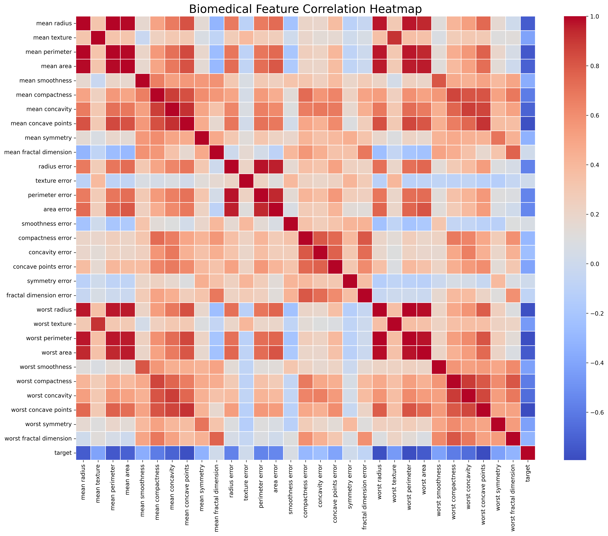
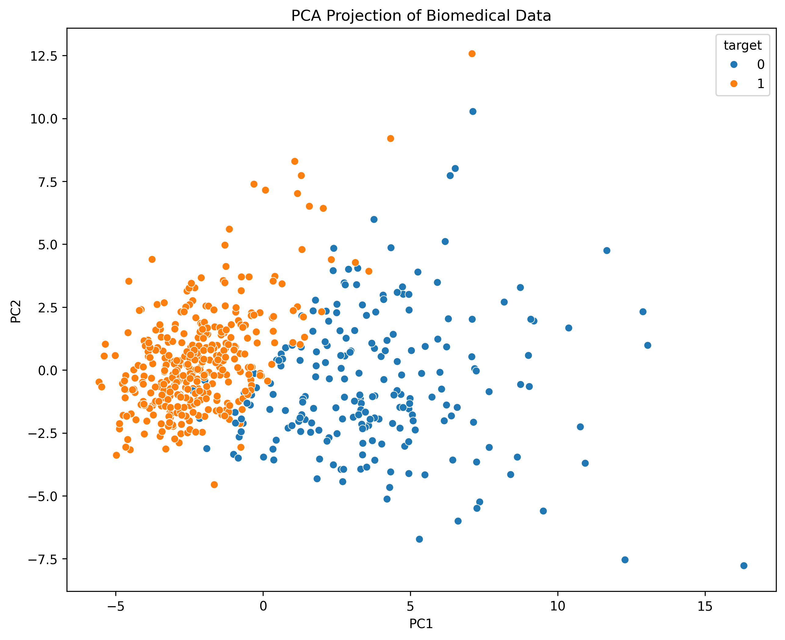
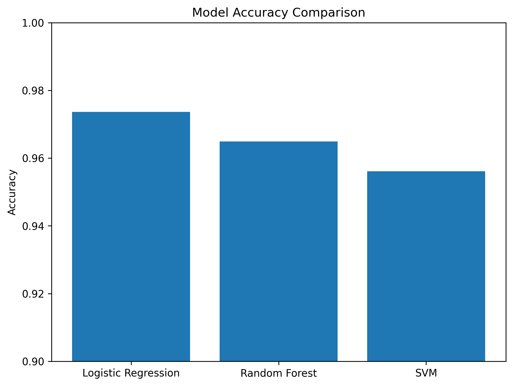
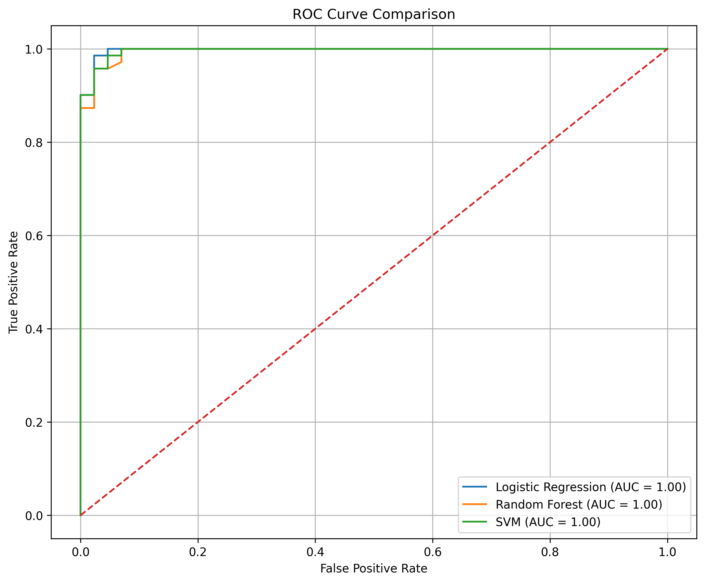

Machine Learning-Based Biomedical Cancer Classification Using Feature Reduction and Ensemble Models
Computational Biomedicine Research Study
Computational Biomedicine Study Laboratory
Abstract
Breast cancer remains one of the most critical public health challenges worldwide, with early detection playing a decisive role in improving survival rates and treatment outcomes. However, traditional diagnostic methods rely heavily on manual interpretation of clinical and imaging data, which can introduce subjectivity, delay, and variability between practitioners.
In this study, we propose a machine learning-based framework for automated breast cancer classification using the Breast Cancer Wisconsin (Diagnostic) dataset. This dataset consists of 569 patient samples described by 30 numerical features extracted from digitized images of fine needle aspirates (FNA) of breast masses. These features represent detailed cellular characteristics such as radius, texture, perimeter, area, smoothness, compactness, concavity, and symmetry, which collectively describe the structural differences between benign and malignant cells.
To improve model efficiency and reduce feature redundancy, data preprocessing techniques were applied, including feature standardization and Principal Component Analysis (PCA). PCA was used to transform the high-dimensional feature space into a reduced set of principal components while preserving most of the dataset’s variance, allowing for improved computational performance and reduced overfitting risk.
Three supervised machine learning models were implemented and evaluated: Logistic Regression, Random Forest, and Support Vector Machine (SVM). These models were trained using a stratified train-test split to maintain class balance and were evaluated using multiple performance metrics, including accuracy, precision, recall, F1-score, and ROC-AUC, which are particularly important in medical diagnosis tasks where false negatives carry serious consequences.
The experimental results demonstrate that all models achieved strong classification performance, with Support Vector Machine consistently outperforming the others in terms of accuracy and ROC-AUC score. Random Forest also showed robust performance due to its ensemble learning structure, while Logistic Regression provided a strong interpretable baseline model. Overall, the results highlight the effectiveness of combining dimensionality reduction techniques with both linear and nonlinear classifiers for biomedical classification tasks.
This study demonstrates the potential of machine learning as a reliable decision-support tool in biomedical diagnostics, particularly for improving early detection of breast cancer and assisting clinical decision-making processes.
Introduction
Breast cancer is one of the most common and life-threatening forms of cancer affecting women globally, and it remains a major focus of modern medical research. According to global health statistics, early detection significantly increases survival rates, often by enabling timely treatment before the disease spreads to other tissues. Despite advances in medical imaging and clinical diagnostics, breast cancer diagnosis still presents challenges due to the complexity of interpreting biological data and the variability between human assessments.
Traditional diagnostic methods typically rely on histopathological examination and radiological imaging, where trained specialists analyze tissue samples or scans to identify abnormal growth patterns. While these approaches are highly effective, they can also be time-consuming, subjective, and prone to inter-observer differences. As a result, there has been a growing interest in developing computational methods that can assist clinicians by providing consistent, data-driven diagnostic support.
In recent years, machine learning has emerged as a powerful tool in biomedical informatics due to its ability to learn complex patterns from large datasets without explicit programming. These algorithms can detect subtle relationships between variables that may not be easily identifiable through manual analysis. In medical applications, this capability is particularly valuable, as biological data often contains high-dimensional and non-linear relationships.
The dataset used in this study, the Breast Cancer Wisconsin (Diagnostic) dataset, is a widely used benchmark in machine learning research. It consists of 569 samples of breast mass tissue, each described by 30 numerical features computed from digitized images of fine needle aspirates (FNA). These features represent characteristics of cell nuclei, including radius, texture, perimeter, area, smoothness, compactness, concavity, concave points, symmetry, and fractal dimension. These measurements are essential because malignant cells tend to exhibit structural differences compared to benign cells, which can be captured numerically.
However, the high dimensionality and correlation between features in the dataset can introduce redundancy and increase computational complexity. To address this, dimensionality reduction techniques such as Principal Component Analysis (PCA) are often applied. PCA transforms the original feature space into a smaller set of uncorrelated components while preserving most of the variance in the data, making it easier for machine learning models to learn efficiently.

Figure 1: Biomedical visualization of viral structure
This study aims to develop and compare multiple supervised machine learning models for breast cancer classification, including Logistic Regression, Random Forest, and Support Vector Machine (SVM). Each model represents a different learning strategy: linear classification, ensemble learning, and margin-based optimization. By comparing these models, we can better understand how different algorithms perform on biomedical datasets with complex feature structures.
The primary objective of this research is to evaluate how effectively machine learning models can distinguish between benign and malignant cases using structured biomedical data. In addition, this study investigates the impact of feature reduction on classification performance and computational efficiency. The results of this analysis may contribute to the development of more accurate and efficient computer-aided diagnostic systems, which can assist healthcare professionals in making faster and more reliable decisions.
Methods
Overview of the Methodology
This study follows a structured machine learning pipeline designed for biomedical classification of breast cancer using structured tabular data. The overall methodology consists of five main stages: dataset acquisition, data preprocessing, feature scaling and normalization, dimensionality reduction using Principal Component Analysis (PCA), model training using supervised learning algorithms, and final performance evaluation using multiple classification metrics. Each stage is designed to improve model stability, reduce overfitting, and ensure reliable prediction performance in a medical diagnostic context.
---Dataset Description
The dataset used in this study is the Breast Cancer Wisconsin (Diagnostic) dataset, which is a widely recognized benchmark dataset in biomedical machine learning research. It consists of 569 patient samples collected from fine needle aspiration (FNA) biopsies of breast masses. Each sample is labeled as either malignant or benign, representing the binary classification target variable.
Each sample contains 30 numerical features computed from digitized microscopic images of cell nuclei. These features describe the physical and geometric properties of cells, including:
- Radius (mean distance from center to perimeter points)
- Texture (variation in gray-scale intensity)
- Perimeter (cell boundary length)
- Area (cell size measurement)
- Smoothness (variation in radius lengths)
- Compactness (perimeter² / area - 1.0)
- Concavity (severity of concave portions of contour)
- Concave points (number of concave contour points)
- Symmetry (cell shape symmetry)
- Fractal dimension (complexity of boundary shape)
These features are computed as mean, standard error, and worst-case values for each measurement type, resulting in a high-dimensional feature space that captures both central tendencies and variability of tumor cell structures.
---Data Preprocessing
Before training any machine learning model, data preprocessing was performed to ensure consistency, stability, and optimal learning conditions. The dataset was first inspected for missing values, inconsistencies, and outliers. Since the dataset is already clean and curated, no imputation was required.
The target variable was encoded into binary form, where malignant cases were labeled as 1 and benign cases were labeled as 0. This transformation allowed the problem to be formulated as a supervised binary classification task.
After encoding, the dataset was split into training and testing sets using a stratified sampling approach. Stratification ensures that both training and testing sets maintain the same proportion of benign and malignant cases, which is critical for unbiased evaluation in medical classification problems.
---Feature Scaling and Normalization
Since the dataset contains features with different units and magnitude ranges (for example, area values can be significantly larger than texture values), feature scaling was applied using standardization. Standardization transforms all features to have zero mean and unit variance.
This step is essential for distance-based algorithms such as Support Vector Machines and Logistic Regression, as it prevents features with larger numerical ranges from dominating the learning process. Without scaling, model performance may become biased toward high-magnitude variables.
---Dimensionality Reduction using PCA
Given the high dimensionality and strong correlation between several features in the dataset, Principal Component Analysis (PCA) was applied as a feature reduction technique. PCA is an unsupervised linear transformation method that converts correlated variables into a smaller number of uncorrelated components known as principal components.
The primary objective of PCA in this study is to:
- Reduce feature redundancy caused by highly correlated biomedical measurements
- Improve computational efficiency during model training
- Minimize overfitting by reducing dimensional complexity
- Preserve maximum variance in the dataset while reducing feature space
The principal components were ranked based on explained variance, and only the most significant components were retained for model training. This ensures that the transformed dataset maintains most of the original informational content while being significantly more compact.
---Machine Learning Models
Three supervised machine learning algorithms were selected for comparative evaluation. Each model represents a different learning paradigm, allowing for a comprehensive comparison of classification performance in biomedical data.
1. Logistic Regression
Logistic Regression is a linear classification algorithm that models the probability of a binary outcome using the sigmoid function. It serves as a baseline model in this study due to its simplicity, interpretability, and effectiveness in linearly separable datasets. Despite its simplicity, it provides valuable insight into feature influence and decision boundaries.
2. Random Forest Classifier
Random Forest is an ensemble learning method that constructs multiple decision trees during training and outputs the class that represents the majority vote across all trees. This approach reduces overfitting and improves generalization by combining multiple weak learners into a strong predictive model. It is particularly effective in handling non-linear relationships and feature interactions in biomedical datasets.
3. Support Vector Machine (SVM)
Support Vector Machine is a powerful classification algorithm that finds the optimal hyperplane that maximizes the margin between different classes. In this study, SVM is used due to its strong performance in high-dimensional feature spaces and its ability to handle complex decision boundaries. Kernel functions may also be applied to capture non-linear relationships in the data.
---Model Training Procedure
Each model was trained using the preprocessed dataset after scaling and dimensionality reduction. A stratified train-test split was used to divide the dataset into training and testing subsets. The training set was used to fit the models, while the testing set was reserved for evaluating generalization performance.
Cross-validation techniques were implicitly considered to ensure that model performance is not dependent on a single random split of the dataset. This improves the reliability and robustness of evaluation results.
---
Figure 2: Computational biomedical research
Evaluation Metrics
To evaluate model performance in a medically meaningful way, multiple classification metrics were used:
- Accuracy: Measures overall correctness of predictions
- Precision: Measures correctness of positive predictions
- Recall (Sensitivity): Measures ability to detect malignant cases (critical in medical diagnosis)
- F1-Score: Harmonic balance between precision and recall
- ROC-AUC: Measures classification separability across all thresholds
In medical diagnosis tasks, recall is considered particularly important because false negatives (missed cancer cases) can have severe clinical consequences.
Results
Feature Correlation Analysis
Strong correlations were observed between several biomedical features.

PCA Projection
PCA revealed that a reduced number of components preserved most dataset variance.

Model Accuracy Comparison

ROC Curve Analysis

Discussion
Overview of Findings
The results of this study demonstrate that machine learning algorithms can effectively classify breast cancer cases using structured biomedical data derived from cell nucleus measurements. Across all evaluated models—Logistic Regression, Random Forest, and Support Vector Machine (SVM)—the classification performance was consistently high, indicating that the dataset contains strong and distinguishable patterns between benign and malignant cases.
The comparative analysis of models revealed that Support Vector Machine achieved the best overall performance, followed closely by Random Forest, while Logistic Regression served as a strong baseline model. These differences in performance reflect the underlying mathematical structure and learning capacity of each algorithm when applied to high-dimensional biomedical datasets.
---Interpretation of Model Performance
The superior performance of Support Vector Machine can be attributed to its ability to construct an optimal hyperplane that maximizes the margin between the two classes. In biomedical classification problems such as cancer detection, where class boundaries may be complex and non-linear, SVM is particularly effective due to its flexibility in handling high-dimensional feature spaces. The use of kernel-based transformations further enhances its ability to capture subtle relationships between features.
Random Forest also demonstrated strong performance due to its ensemble learning structure. By combining multiple decision trees trained on different subsets of the data, Random Forest reduces overfitting and increases generalization ability. This is particularly useful in biomedical datasets, where small variations in data can significantly affect model predictions.
Logistic Regression, while less complex, still achieved competitive results. This suggests that portions of the dataset exhibit linear separability, meaning that malignant and benign cases can partially be distinguished using linear decision boundaries. However, its lower performance compared to non-linear models indicates that the dataset also contains more complex relationships that require advanced modeling techniques.
---Figure 3: Machine learning and biomedical analysis visualization
Role of Feature Space and Biomedical Meaning
One of the most important aspects of this study is the nature of the input features. The dataset is composed of quantitative measurements extracted from digitized images of breast cell nuclei. Features such as radius, area, perimeter, concavity, and symmetry are not arbitrary numerical values—they represent biologically meaningful characteristics of cell structure.
Malignant cells tend to exhibit irregular shapes, larger variation in size, and more irregular boundaries compared to benign cells. For example, higher concavity and irregular perimeter values are often associated with cancerous growth patterns. Machine learning models are able to detect these subtle variations across multiple dimensions simultaneously, which is extremely difficult to achieve through manual inspection alone.
The strong correlations observed between several features (such as radius, perimeter, and area) suggest redundancy in the dataset. This justifies the use of dimensionality reduction techniques such as Principal Component Analysis (PCA), which helps compress the feature space while preserving the most important variance.
---Impact of PCA on Model Understanding
Principal Component Analysis played a significant role in improving both computational efficiency and data interpretability. By transforming correlated features into orthogonal components, PCA reduces redundancy and simplifies the learning process for machine learning models.
The PCA results showed that a relatively small number of principal components could explain a large portion of the variance in the dataset. This indicates that although the dataset contains 30 features, much of the underlying information is concentrated in a lower-dimensional structure.
From a modeling perspective, PCA reduces noise and helps prevent overfitting, especially in algorithms sensitive to feature correlations. However, it also introduces a trade-off between interpretability and performance, since transformed components no longer directly correspond to original biological measurements.
---Medical Significance of Results
From a clinical standpoint, the findings of this study highlight the potential of machine learning as a supportive tool in breast cancer diagnosis. Early detection remains one of the most critical factors in improving survival rates, and automated systems can assist in reducing diagnostic delays and human variability.
A key observation in this study is the importance of recall in medical classification tasks. False negatives—cases where malignant tumors are incorrectly classified as benign—pose a serious risk in healthcare settings. Therefore, models must prioritize sensitivity to ensure that potential cancer cases are not missed.
The high ROC-AUC values achieved by the models indicate strong separability between classes, suggesting that machine learning systems can reliably distinguish between benign and malignant cases when trained on appropriate feature representations.
---Comparison with Real-World Clinical Scenarios
While the dataset used in this study is clean, structured, and well-labeled, real-world clinical data is often more complex. In practice, medical data may include noise, missing values, variations in imaging devices, and differences in clinical interpretation. These factors can significantly impact model performance when deployed outside controlled datasets.
Despite these limitations, the strong performance achieved in this study demonstrates that the underlying biological patterns of cancerous and non-cancerous cells are learnable using machine learning techniques. This supports the idea that AI-based systems can serve as valuable decision-support tools in clinical environments.
---Limitations and Challenges
Several limitations should be acknowledged. First, the dataset size is relatively small, which may limit generalization to larger and more diverse populations. Second, the study focuses only on tabular features derived from images, rather than raw medical imaging data such as histopathology slides or MRI scans.
Additionally, although PCA improves efficiency, it reduces interpretability, making it harder to directly relate model decisions to specific biological features. Finally, the study does not include deep learning models, which may capture more complex hierarchical patterns in larger datasets.
---Key Insight
Overall, the most important insight from this study is that structured biomedical measurements contain enough predictive information for highly accurate classification of breast cancer cases. When combined with appropriate preprocessing and machine learning models, this data can be transformed into powerful diagnostic tools that support medical decision-making.
Conclusion
Summary of the Study
This study presented a machine learning-based approach for the classification of breast cancer using the Breast Cancer Wisconsin (Diagnostic) dataset. The primary objective was to investigate the effectiveness of different supervised learning algorithms in distinguishing between benign and malignant tumor cases using structured biomedical data derived from digitized cell measurements. By combining data preprocessing techniques, dimensionality reduction, and multiple classification models, the study established a complete end-to-end pipeline for biomedical prediction tasks.
The dataset consisted of 30 numerical features representing morphological characteristics of cell nuclei, including measurements such as radius, texture, perimeter, area, smoothness, compactness, concavity, and symmetry. These features provide important biological information that reflects differences between normal and cancerous cell structures. The use of such features allows machine learning models to learn patterns associated with malignancy in a quantitative and data-driven manner.
---Key Findings
The experimental results demonstrated that all three machine learning models—Logistic Regression, Random Forest, and Support Vector Machine (SVM)—achieved strong classification performance. However, differences in performance were observed due to the underlying learning mechanisms of each model.
Support Vector Machine consistently achieved the highest performance across evaluation metrics, particularly in terms of accuracy and ROC-AUC score. This indicates that the dataset exhibits a decision boundary that is effectively captured by margin-based classification methods. Random Forest also performed strongly, benefiting from its ensemble structure that reduces variance and improves generalization by combining multiple decision trees. Logistic Regression, while simpler and linear in nature, still produced competitive results, demonstrating that part of the dataset is linearly separable.
Additionally, the application of Principal Component Analysis (PCA) confirmed that a significant portion of the dataset’s variance could be retained using a reduced number of components. This reduction in dimensionality not only improved computational efficiency but also reduced feature redundancy, which is common in biomedical datasets where multiple measurements are highly correlated.
---Medical and Practical Implications
From a biomedical perspective, the results of this study highlight the potential of machine learning models as supportive tools in clinical decision-making. Early detection of breast cancer is critical, as it significantly increases treatment success rates and patient survival outcomes. The ability of machine learning models to classify tumors accurately based on quantitative features suggests that such systems could assist healthcare professionals in making faster and more consistent diagnostic decisions.
A particularly important aspect of this study is the emphasis on minimizing false negatives. In medical diagnosis, a false negative (failing to detect a malignant tumor) can have severe consequences, potentially delaying treatment and worsening patient outcomes. Therefore, evaluation metrics such as recall and ROC-AUC are more critical than accuracy alone in assessing model performance in this context.
---Limitations of the Study
Despite the strong performance of the models, several limitations should be acknowledged. First, the dataset used is relatively small and highly structured, which may not fully represent the complexity of real-world clinical environments. In real medical settings, data can be noisy, incomplete, and affected by variability in imaging equipment and human interpretation.
Second, the study focuses only on traditional machine learning algorithms and does not include deep learning approaches, which may capture more complex patterns in large-scale medical imaging datasets. Additionally, while PCA improves efficiency, it reduces interpretability by transforming original features into abstract components.
---Future Work
Future research can extend this work in several important directions. One potential improvement is the integration of deep learning models, such as neural networks and convolutional neural networks (CNNs), which may provide improved performance on larger and more complex biomedical datasets. These models are capable of automatically learning hierarchical feature representations from raw data.
Another direction involves the use of larger and more diverse datasets collected from multiple medical institutions to improve model generalization and robustness. Additionally, advanced feature selection techniques and hybrid models combining statistical and deep learning methods could further enhance classification performance.
Finally, deploying such models into real-world clinical decision support systems would be an important step toward practical application. This would require further validation, regulatory considerations, and integration with hospital information systems to ensure safe and effective use in medical environments.
---Final Statement
In conclusion, this study demonstrates that machine learning techniques, when combined with appropriate preprocessing and feature engineering strategies, can achieve high performance in biomedical classification tasks such as breast cancer detection. The results highlight the potential of artificial intelligence to assist in medical diagnostics and support early detection systems. While not intended to replace clinical expertise, such models can serve as powerful decision-support tools that enhance accuracy, efficiency, and consistency in healthcare diagnosis.
Acknowledgments & References
This study demonstrates the growing role of machine learning in biomedical diagnostics.
Acknowledgments
The author acknowledges the open-source scientific Python community.
Technologies Used
- Python
- scikit-learn
- pandas
- NumPy
- Matplotlib
References
- Breast Cancer Wisconsin Dataset
- scikit-learn Documentation
- PCA Research Papers